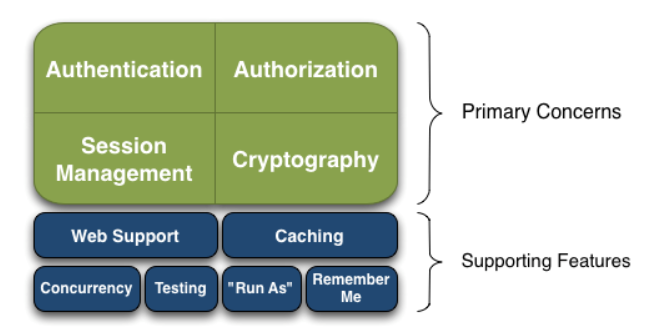
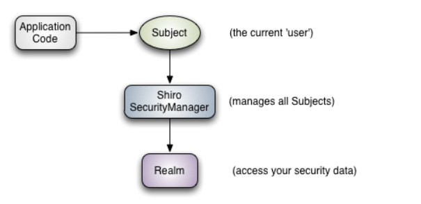
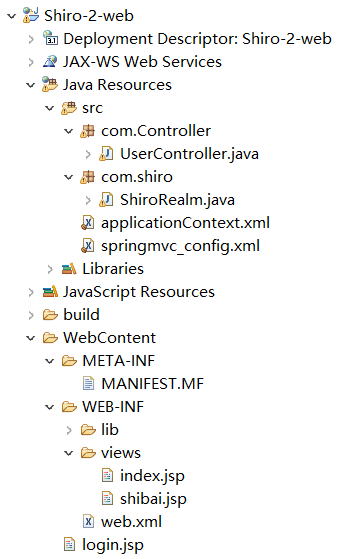
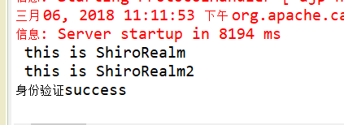
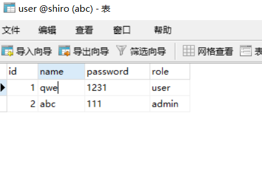

Shiro是一个强大的简单易用的Java安全框架，主要用来更便捷的认证，授权，加密，会话管理。
Shiro 可以帮助我们完成：认证、授权、加密、会话管理、与 Web 集成、缓存等。
其基本功能点:

Authentication：身份认证 / 登录，验证用户是不是拥有相应的身份；
Authorization：授权，即权限验证，验证某个已认证的用户是否拥有某个权限；即判断用户是否能做事情，常见的如：验证某个用户是否拥有某个角色。或者细粒度的验证某个用户对某个资源是否具有某个权限；
Session Manager：会话管理，即用户登录后就是一次会话，在没有退出之前，它的所有信息都在会话中；会话可以是普通 JavaSE 环境的，也可以是如 Web 环境的；
Cryptography：加密，保护数据的安全性，如密码加密存储到数据库，而不是明文存储；
Web Support：Web 支持，可以非常容易的集成到 Web 环境；
Caching：缓存，比如用户登录后，其用户信息、拥有的角色 / 权限不必每次去查，这样可以提高效率；
Concurrency：shiro 支持多线程应用的并发验证，即如在一个线程中开启另一个线程，能把权限自动传播过去；
Testing：提供测试支持；
Run As：允许一个用户假装为另一个用户（如果他们允许）的身份进行访问；
Remember Me：记住我，这个是非常常见的功能，即一次登录后，下次再来的话不用登录了。
Shiro的工作原理：

Subject：主体，代表了当前 “用户”，这个用户不一定是一个具体的人，与当前应用交互的任何东西都是 Subject，如网络爬虫，机器人等；所有 Subject 都绑定到 SecurityManager，与 Subject 的所有交互都会委托给 SecurityManager；可以把 Subject 认为是一个门面；SecurityManager 才是实际的执行者；
SecurityManager：安全管理器；即所有与安全有关的操作都会与 SecurityManager 交互；且它管理着所有 Subject；可以看出它是 Shiro 的核心，它负责与后边介绍的其他组件进行交互，如果学习过 SpringMVC，你可以把它看成 DispatcherServlet 前端控制器；
Realm：域，Shiro 从 Realm 中获取安全数据（如用户User、角色Role、权限），就是说 SecurityManager 要验证用户身份，那么它需要从 Realm 中获取相应的用户信息进行比较以确定用户身份是否合法；也需要从 Realm 得到用户相应的角色 / 权限进行验证用户是否能进行权限操作；可以把 Realm 看成 DataSource，即安全数据源。
总结：
应用代码通过 Subject 来进行认证和授权，而 Subject 又委托给 SecurityManager；
我们需要给 Shiro 的 SecurityManager 注入 Realm，从而让 SecurityManager 能得到合法的用户及其权限进行判断。
Shiro 不提供维护用户 / 权限，而是通过 Realm 让开发人员自己注入。
添加 junit、common-logging 及 shiro-core 依赖即可。
这里使用的是Gradle管理工具。
build.gradle:
dependencies {
// This dependency is exported to consumers, that is to say found on their compile classpath.
api 'org.apache.commons:commons-math3:3.6.1'
// This dependency is used internally, and not exposed to consumers on their own compile classpath.
implementation 'com.google.guava:guava:23.0'
// Use JUnit test framework
testImplementation 'junit:junit:4.12'
// https://mvnrepository.com/artifact/org.apache.shiro/shiro-core
compile group: 'org.apache.shiro', name: 'shiro-core', version: '1.4.0'
// https://mvnrepository.com/artifact/commons-logging/commons-logging
compile group: 'commons-logging', name: 'commons-logging', version: '1.2'
// https://mvnrepository.com/artifact/org.slf4j/slf4j-log4j12
testCompile group: 'org.slf4j', name: 'slf4j-log4j12', version: '1.7.21'
}
shiro.ini
[users] # ---root为用户名，密码是 secret ,拥有admin角色---- root=secret,admin guest = guest, guest presidentskroob = 12345, president darkhelmet = ludicrousspeed, darklord, schwartz aihe=aihe,client # -----aihe用户密码为aihe ,拥有goodguy,client角色--------------------------- [roles] # ------admin 拥有 *代表所有的权限， ----------------------------------------------------------------------- admin = * client = look:* goodguy = winnebago:drive:eagle5
public class test_shiro { private static final transient Logger log = LoggerFactory.getLogger(test_shiro.class); public static void main(String[] args) { log.info("My First Apache Shiro Application"); //1.解析ini文件, 获取SecurityManager工厂，此处使用Ini配置文件初始化SecurityManager Factory<SecurityManager> factory = new IniSecurityManagerFactory( "classpath:shiro.ini"); //2.得到SecurityManager实例 并绑定给SecurityUtils SecurityManager securityManager = factory.getInstance(); SecurityUtils.setSecurityManager(securityManager); //3、通过SecurityUtils 得到Subject（当前用户） Subject user = SecurityUtils.getSubject(); if(user.isAuthenticated()==false) { //用户是否登录过 //4.创建用户名/密码身份验证Token令牌,并记住令牌 UsernamePasswordToken token = new UsernamePasswordToken("darkhelmet", "ludicrousspeed"); //darkhelmet 为用户名，ludicrousspeed为密码 token.setRememberMe(true); try { //4、当前用户通过令牌进行登录 user.login(token); System.out.println("身份验证success"); } catch(UnknownAccountException e) { System.out.println("用户名错误 "); } catch(IncorrectCredentialsException e ) { System.out.println("密码错误"); } catch(AuthenticationException e) { System.out.println("验证错误"); } } // 查看用户是否有指定的角色,由于在shiro.ini配置文件中 root 没有client角色，aihe有该角色 if ( user.hasRole( "client" ) ) { System.out.println("有指定的角色权限"); } else { System.out.println("没有指定的角色权限"); } //判断当前用户是否拥有指定的权限 if(user.isPermitted("winnebago:drive:eagle5")) { System.out.println("当前用户拥有指定的权限"); }else { System.out.println("当前用户bu拥有指定的权限"); } user.logout(); //退出登录 } }
总结：
指定一个 ini 配置文件来创建一个 SecurityManager 工厂；
获取 SecurityManager 并绑定到 SecurityUtils，这是一个全局设置，设置一次即可；
通过 SecurityUtils 得到 Subject，其会自动绑定到当前线程；如果在 web 环境在请求结束时需要解除绑定；然后获取身份验证的 Token，如用户名 / 密码；
调 用 subject.login 方法进行登录，其会自动委托给 SecurityManager.login 方法进行登录；
如果身份验证失败请捕获 AuthenticationException 或其子类等，
调用 subject.logout 退出，其会自动委托给 SecurityManager.logout 方法退出。

applicationContext.xml:
spring的配置文件中需要配置shiro的相关bean
<?xml version="1.0" encoding="UTF-8"?> <beans xmlns="http://www.springframework.org/schema/beans" xmlns:p="http://www.springframework.org/schema/p" xmlns:mybatis="http://mybatis.org/schema/mybatis-spring" xmlns:xsi="http://www.w3.org/2001/XMLSchema-instance" xmlns:mvc="http://www.springframework.org/schema/mvc" xmlns:aop="http://www.springframework.org/schema/aop" xmlns:context="http://www.springframework.org/schema/context" xmlns:tx="http://www.springframework.org/schema/tx" xsi:schemaLocation="http://www.springframework.org/schema/mvc http://www.springframework.org/schema/mvc/spring-mvc-4.3.xsd http://www.springframework.org/schema/beans http://www.springframework.org/schema/beans/spring-beans.xsd http://www.springframework.org/schema/tx http://www.springframework.org/schema/tx/spring-tx-4.3.xsd http://www.springframework.org/schema/context http://www.springframework.org/schema/context/spring-context-4.3.xsd http://mybatis.org/schema/mybatis-spring http://mybatis.org/schema/mybatis-spring.xsd http://www.springframework.org/schema/aop http://www.springframework.org/schema/aop/spring-aop-4.3.xsd"> <!-- id 值 必须与web.xml 中配置的 shiroFilter 这个过滤器的Filter-name 保持一致，因为过滤器的类是代理类--> <bean id="shiroFilter" class="org.apache.shiro.spring.web.ShiroFilterFactoryBean"> <property name="securityManager" ref="securityManager" /> <property name="loginUrl" value="/login.jsp"/> <!-- 无需认证可进入的页面 --> <!-- 代表过滤器的详细配置 --> <property name="filterChainDefinitions"> <value> <!-- anon 表示不需要验证，authc 表示需要认证。 这里意思是除了访问login.jsp页面,/login请求,/Shiro_login请求，不需要认证登录， 其他都需要认证登录，否则会一直在login页面 --> /login.jsp = anon /login = anon /Shiro_login = anon /** = authc </value> </property> </bean> <!-- 需要注入该bean，应为shiro底层需要使用该类 --> <bean id="securityManager" class="org.apache.shiro.web.mgt.DefaultWebSecurityManager"> <property name="realm" ref="myRealm"/> </bean> <!-- 手动创建ShiroRealm 这个bean ，该bean被securityManager 引用--> <bean id="myRealm" class="com.shiro.ShiroRealm"/> <!-- 必须有，用来管理spring容器中常用的对象 --> <bean id="lifecycleBeanPostProcessor" class="org.apache.shiro.spring.LifecycleBeanPostProcessor"/> <!-- 开启shiro注解 --> <bean class="org.springframework.aop.framework.autoproxy.DefaultAdvisorAutoProxyCreator" depends-on="lifecycleBeanPostProcessor"/> <bean class="org.apache.shiro.spring.security.interceptor.AuthorizationAttributeSourceAdvisor"> <property name="securityManager" ref="securityManager"/> </bean> </beans>
springmvc_config.xml:
springmvc的配置文件中需要指明Controller类的位置，从而通过扫描注解注入到容器中，视图解析器等。
<?xml version="1.0" encoding="UTF-8"?> <beans xmlns="http://www.springframework.org/schema/beans" xmlns:xsi="http://www.w3.org/2001/XMLSchema-instance" xmlns:tx="http://www.springframework.org/schema/tx" xmlns:context="http://www.springframework.org/schema/context" xmlns:mvc="http://www.springframework.org/schema/mvc" xsi:schemaLocation="http://www.springframework.org/schema/beans http://www.springframework.org/schema/beans/spring-beans-3.2.xsd http://www.springframework.org/schema/tx http://www.springframework.org/schema/tx/spring-tx-3.2.xsd http://www.springframework.org/schema/context http://www.springframework.org/schema/context/spring-context-3.2.xsd http://www.springframework.org/schema/mvc http://www.springframework.org/schema/mvc/spring-mvc-3.2.xsd"> <!-- 自动扫描的包名 ， 若扫描到spring注解的类，这些类被注入到ioc容器中 --> <context:component-scan base-package="com.Controller"/> <mvc:annotation-driven /> <!-- 视图解析器， 把控制器的方法 返回的值通过 prefix + 返回值 + suffix 的形式，得到响应的jsp页面 --> <bean class="org.springframework.web.servlet.view.InternalResourceViewResolver"> <property name="prefix" value="/WEB-INF/views/"/> <property name="suffix" value=".jsp"/> </bean> </beans>
web.xml:
该配置中给出springmvc，spring的配置文件的位置，并进行shiro的配置。
<?xml version="1.0" encoding="UTF-8"?> <web-app xmlns:xsi="http://www.w3.org/2001/XMLSchema-instance" xmlns="http://xmlns.jcp.org/xml/ns/javaee" xsi:schemaLocation="http://xmlns.jcp.org/xml/ns/javaee http://xmlns.jcp.org/xml/ns/javaee/web-app_3_1.xsd" id="WebApp_ID" version="3.1"> <display-name>Shiro-2-web</display-name> <!-- 配置DispatcherServlet --> <servlet> <servlet-name>springmvc</servlet-name> <servlet-class>org.springframework.web.servlet.DispatcherServlet</servlet-class> <init-param> <param-name>contextConfigLocation</param-name> <param-value>classpath:springmvc_config.xml</param-value> </init-param> <load-on-startup>1</load-on-startup> </servlet> <servlet-mapping> <servlet-name>springmvc</servlet-name> <url-pattern>/</url-pattern> </servlet-mapping> <!--监听 spring的ioc容器--> <listener> <listener-class>org.springframework.web.context.ContextLoaderListener</listener-class> </listener> <context-param> <param-name>contextConfigLocation</param-name> <param-value>classpath:applicationContext.xml</param-value> </context-param> <!-- shiro 配置开始： spring 与 shiro 的集成 DelegatingFilterProxy作用是自动到spring容器查找名字为shiroFilter（filter-name）的bean并把所有Filter的操作委托给它,类似门卫的作用。 然后将ShiroFilter配置到spring容器即可： --> <filter> <filter-name>shiroFilter</filter-name> <filter-class>org.springframework.web.filter.DelegatingFilterProxy</filter-class> <async-supported>true</async-supported> <init-param> <param-name>targetFilterLifecycle</param-name> <param-value>true</param-value> </init-param> <!-- targetBeanName 属性 指定 查找的bean的名字，并把过滤器的操作委托给该bean，如果不写则默认为filter-name标签的值 --> <init-param> <param-name>targetBeanName</param-name> <param-value>shiroFilter</param-value> </init-param> </filter> <filter-mapping> <filter-name>shiroFilter</filter-name> <url-pattern>/*</url-pattern> </filter-mapping> <!-- shiro配置 结束 --> </web-app>
①：login.jsp:
<body> Shiro-login: <form action="Shiro_login" method="post"> username:<input type="text" name="username"/> password:<input type="text" name="password"/> <input type="submit" value="tijiao"/> </form> </body>
②：UserController.java:
@Controller public class UserController { @RequestMapping(value = "/Shiro_login") public String Shiro_login(@RequestParam(value = "username") String username, @RequestParam(value = "password") String password) { /* * 0.创建SecurityManager工厂，得到SecurityManager实例 并绑定给SecurityUtils * 已经在配置文件中完成。 * 1. 通过SecurityUtils 得到Subject（当前用户） * 2. 判断用户是否登录 * 3. 通过传过来的用户名与密码，创建认证令牌 * 4. 通过令牌进行登录验证 * */ Subject currentUser = SecurityUtils.getSubject(); if(currentUser.isAuthenticated()==false) { //用户是否登录过 //.创建用户名/密码身份验证Token令牌,并记住令牌 UsernamePasswordToken token = new UsernamePasswordToken(username,password); token.setRememberMe(true); try { /*当前用户通过令牌进行登录 * * 调用login(token); 方法 在底层中会调用对应realm的bean类的doGetAuthenticationInfo方法 * 并把token 当作参数传给这个方法,在这个方法中实现与数据库信息的验证。 * 在login方法中 如果验证错误会抛出异常，通过抛出异常的方式，来表达验证错误， * 验证正确会正常执行下一行代码，没有返回值。 * */ currentUser.login(token); System.out.println("身份验证success"); } catch(AuthenticationException e) { System.out.println("验证错误"); return "shibai"; } } return "index"; } }
③：ShiroRealm.class：
//在ShiroRealm类中需要查询数据库来进行认证 public class ShiroRealm extends AuthenticatingRealm { /* * 1. doGetAuthenticationInfo : 获取数据库数据，进行验证，若数据库没有对于数据，返回null ,若有，返回AuthenticationInfo 对象 * 2. AuthenticationInfo ：该对象可以使用SimpleAuthenticationInfo类（AuthenticationInfo类的子类） 封装正确的用户名与密码 * 3. token :里面封装了需要验证的用户名密码 * */ @Override protected AuthenticationInfo doGetAuthenticationInfo(AuthenticationToken token) throws AuthenticationException { System.out.println(" this is ShiroRealm "); SimpleAuthenticationInfo info=null; //1.把token 装换为UsernamePasswordToken类对象 UsernamePasswordToken userToken=(UsernamePasswordToken) token; //2.获取令牌中用户名： String username = userToken.getUsername(); //3.链接数据库: Connection conn=null; try { Class.forName("com.mysql.jdbc.Driver"); conn=DriverManager.getConnection("jdbc:mysql://localhost:3306/Shiro","root","root"); } catch (ClassNotFoundException e) { System.out.println("数据库链接失败1"); } catch (SQLException e) { System.out.println("数据库链接失败2"); } //4.通过用户名查询数据库： try { String sql="select * from user where name=?"; PreparedStatement pstmt = conn.prepareStatement(sql); pstmt.setString(1, username); ResultSet rs = pstmt.executeQuery(); if(rs.next()) { /* * info= new SimpleAuthenticationInfo(username, rs.getString(3), this.getName()); * * username ： 传入的token中的用户名（用户输入的用户名），也可以传对象。 * rs.getString(3) ： 数据库中获取的密码。 * this.getName() ： 这里的this 是指的ShiroRealm类，所以是获取的类名。 * * 传入的password（这里是从数据库获取的）和token（filter中登录时生成的）中的password做对比， * 如果相同就允许登录，不相同就抛出异常。 * * */ info=new SimpleAuthenticationInfo(username, rs.getString(3), this.getName()); }else { System.out.println("查询数据不存在异常"); throw new AuthenticationException(); } } catch (SQLException e) { System.out.println("查询异常"); } return info; } }
①：创建多个不同的Realm实例，它们可以使用不同的数据库或加密方式来验证用户输入的数据。
ShiroRealm.java:
查询的是 shiro 数据库。
package com.shiro; //在ShiroRealm类中需要查询数据库来进行认证 public class ShiroRealm extends AuthenticatingRealm { @Override protected AuthenticationInfo doGetAuthenticationInfo(AuthenticationToken token) throws AuthenticationException { System.out.println(" this is ShiroRealm "); SimpleAuthenticationInfo info=null; UsernamePasswordToken userToken=(UsernamePasswordToken) token; String username = userToken.getUsername(); Connection conn=null; try { Class.forName("com.mysql.jdbc.Driver"); conn=DriverManager.getConnection("jdbc:mysql://localhost:3306/Shiro","root","root"); } catch (ClassNotFoundException e) { System.out.println("数据库链接失败1"); } catch (SQLException e) { System.out.println("数据库链接失败2"); } try { String sql="select * from user where name=?"; PreparedStatement pstmt = conn.prepareStatement(sql); pstmt.setString(1, username); ResultSet rs = pstmt.executeQuery(); if(rs.next()) { info=new SimpleAuthenticationInfo(username, rs.getString(3), this.getName()); }else { System.out.println("查询数据不存在异常"); throw new AuthenticationException(); } } catch (SQLException e) { System.out.println("查询异常"); } return info; } }
ShiroRealm2.java:
查询的是 shiro2 数据库。
package com.shiro; //在ShiroRealm类中需要查询数据库来进行认证 public class ShiroRealm2 extends AuthenticatingRealm { @Override protected AuthenticationInfo doGetAuthenticationInfo(AuthenticationToken token) throws AuthenticationException { System.out.println(" this is ShiroRealm2 "); SimpleAuthenticationInfo info=null; UsernamePasswordToken userToken=(UsernamePasswordToken) token; String username = userToken.getUsername(); Connection conn=null; try { Class.forName("com.mysql.jdbc.Driver"); conn=DriverManager.getConnection("jdbc:mysql://localhost:3306/Shiro2","root","root"); } catch (ClassNotFoundException e) { System.out.println("数据库链接失败1"); } catch (SQLException e) { System.out.println("数据库链接失败2"); } try { String sql="select * from user where name=?"; PreparedStatement pstmt = conn.prepareStatement(sql); pstmt.setString(1, username); ResultSet rs = pstmt.executeQuery(); if(rs.next()) { info=new SimpleAuthenticationInfo(username, rs.getString(3), this.getName()); }else { System.out.println("查询数据不存在异常"); throw new AuthenticationException(); } } catch (SQLException e) { System.out.println("查询异常"); } return info; } }
②：修改spring的配置文件：
applicationContext.xml:
spring的配置文件中需要配置shiro的相关bean
<?xml version="1.0" encoding="UTF-8"?> <beans xmlns="http://www.springframework.org/schema/beans" xmlns:p="http://www.springframework.org/schema/p" xmlns:mybatis="http://mybatis.org/schema/mybatis-spring" xmlns:xsi="http://www.w3.org/2001/XMLSchema-instance" xmlns:mvc="http://www.springframework.org/schema/mvc" xmlns:aop="http://www.springframework.org/schema/aop" xmlns:context="http://www.springframework.org/schema/context" xmlns:tx="http://www.springframework.org/schema/tx" xsi:schemaLocation="http://www.springframework.org/schema/mvc http://www.springframework.org/schema/mvc/spring-mvc-4.3.xsd http://www.springframework.org/schema/beans http://www.springframework.org/schema/beans/spring-beans.xsd http://www.springframework.org/schema/tx http://www.springframework.org/schema/tx/spring-tx-4.3.xsd http://www.springframework.org/schema/context http://www.springframework.org/schema/context/spring-context-4.3.xsd http://mybatis.org/schema/mybatis-spring http://mybatis.org/schema/mybatis-spring.xsd http://www.springframework.org/schema/aop http://www.springframework.org/schema/aop/spring-aop-4.3.xsd"> <!--此处省略 。。。。。--> <!-- 引用多个不同的Realm --> <bean id="securityManager" class="org.apache.shiro.web.mgt.DefaultWebSecurityManager"> <property name="realms"> <list> <ref bean="myRealm"/> <ref bean="myRealm2"/> </list> </property> </bean> <!-- 多Realm bean实例，他们可以使用不同的数据库或加密方式--> <bean id="myRealm" class="com.shiro.ShiroRealm"/> <bean id="myRealm2" class="com.shiro.ShiroRealm2"/> <!--此处省略 。。。。。--> </beans>
③：登录截图：

①与②的步骤与第一种方式相同。
③与④：修改ModularRealmAuthenticator这个bean，可以把该bean作为自定义认证器
<?xml version="1.0" encoding="UTF-8"?> <beans xmlns="http://www.springframework.org/schema/beans" xmlns:p="http://www.springframework.org/schema/p" xmlns:mybatis="http://mybatis.org/schema/mybatis-spring" xmlns:xsi="http://www.w3.org/2001/XMLSchema-instance" xmlns:mvc="http://www.springframework.org/schema/mvc" xmlns:aop="http://www.springframework.org/schema/aop" xmlns:context="http://www.springframework.org/schema/context" xmlns:tx="http://www.springframework.org/schema/tx" xsi:schemaLocation="http://www.springframework.org/schema/mvc http://www.springframework.org/schema/mvc/spring-mvc-4.3.xsd http://www.springframework.org/schema/beans http://www.springframework.org/schema/beans/spring-beans.xsd http://www.springframework.org/schema/tx http://www.springframework.org/schema/tx/spring-tx-4.3.xsd http://www.springframework.org/schema/context http://www.springframework.org/schema/context/spring-context-4.3.xsd http://mybatis.org/schema/mybatis-spring http://mybatis.org/schema/mybatis-spring.xsd http://www.springframework.org/schema/aop http://www.springframework.org/schema/aop/spring-aop-4.3.xsd"> <!--此次省略--> <bean id="securityManager" class="org.apache.shiro.web.mgt.DefaultWebSecurityManager"> <!--装配认证管理器 --> <property name="authenticator" ref="modularRealmAuthenticator"></property> </bean> <!-- 配置认证管理器 --> <bean id="modularRealmAuthenticator" class="org.apache.shiro.authc.pam.ModularRealmAuthenticator"> <property name="realms"> <list> <ref bean="myRealm"/> <ref bean="myRealm2"/> </list> </property> </bean> <!-- 多Realm bean实例，他们可以使用不同的数据库或加密方式--> <bean id="myRealm" class="com.shiro.ShiroRealm"/> <bean id="myRealm2" class="com.shiro.ShiroRealm2"/> <!--此次省略--> </beans>
结果截图：
对用户输入的密码进行加密，并且在验证密码时，取出数据库的密码进行加密，再来对比。
applicationContext.xml:
<!-- 多Realm bean实例，他们可以使用不同的数据库或加密方式--> <bean id="myRealm2" class="com.shiro.ShiroRealm2"> <!-- 加密器属性 --> <property name="credentialsMatcher"> <bean class="org.apache.shiro.authc.credential.HashedCredentialsMatcher"> <property name="hashAlgorithmName" value="MD5"></property> <!-- 加密算法的名称 --> <property name="hashIterations" value="1024"></property> <!-- 加密的次数 --> </bean> </property> </bean>
//AuthorizingRealm 是拥有授权，认证的Realm类 public class ShiroRealm2 extends AuthorizingRealm{ @Override protected AuthenticationInfo doGetAuthenticationInfo(AuthenticationToken token) throws AuthenticationException { System.out.println(" this is doGetAuthenticationInfo 认证管理 "); SimpleAuthenticationInfo info=null; UsernamePasswordToken userToken=(UsernamePasswordToken) token; String username = userToken.getUsername(); Connection conn=null; try { Class.forName("com.mysql.jdbc.Driver"); conn=DriverManager.getConnection("jdbc:mysql://localhost:3306/Shiro","root","root"); } catch (ClassNotFoundException e) { System.out.println("数据库链接失败1"); } catch (SQLException e) { System.out.println("数据库链接失败2"); } try { String sql="select * from user where name=?"; PreparedStatement pstmt = conn.prepareStatement(sql); pstmt.setString(1, username); ResultSet rs = pstmt.executeQuery(); if(rs.next()) { /* * new SimpleAuthenticationInfo(username, rs.getString(3), this.getName()); * * username:用户名 。 * rs.getString(3) ：数据库中获取的密码。 * this.getName()： 类名 * */ //获取用户输入的密码，进行md5加密： SimpleHash simpleHash=new SimpleHash("MD5",rs.getString(3),null,1024); //对经过md5加密的密码进行认证 info=new SimpleAuthenticationInfo(username,simpleHash, this.getName()); }else { System.out.println("查询数据不存在异常"); throw new AuthenticationException(); } } catch (SQLException e) { System.out.println("查询异常"); } return info; } }
在原有加密的基础上，对相同的密码，进行盐值加密，使得它们变得的不同。
ShiroRealm2.java:
//AuthorizingRealm 是拥有授权，认证的Realm类 public class ShiroRealm2 extends AuthorizingRealm{ @Override protected AuthenticationInfo doGetAuthenticationInfo(AuthenticationToken token) throws AuthenticationException { System.out.println(" this is doGetAuthenticationInfo 认证管理 "); SimpleAuthenticationInfo info=null; UsernamePasswordToken userToken=(UsernamePasswordToken) token; String username = userToken.getUsername(); Connection conn=null; try { Class.forName("com.mysql.jdbc.Driver"); conn=DriverManager.getConnection("jdbc:mysql://localhost:3306/Shiro","root","root"); } catch (ClassNotFoundException e) { System.out.println("数据库链接失败1"); } catch (SQLException e) { System.out.println("数据库链接失败2"); } try { String sql="select * from user where name=?"; PreparedStatement pstmt = conn.prepareStatement(sql); pstmt.setString(1, username); ResultSet rs = pstmt.executeQuery(); if(rs.next()) { /* * new SimpleAuthenticationInfo(username, rs.getString(3), this.getName()); * * username:用户名 。 * rs.getString(3) ：数据库中获取的密码。 * this.getName()： 类名 * */ //创建盐值：把用户名作为盐值 ByteSource salt=ByteSource.Util.bytes(username); //获取用户输入的密码，进行md5加密： SimpleHash simpleHash=new SimpleHash("MD5",rs.getString(3),null,1024); //对经过 md5加密+盐值加密 的密码进行认证 info=new SimpleAuthenticationInfo(username,simpleHash,salt,this.getName()); }else { System.out.println("查询数据不存在异常"); throw new AuthenticationException(); } } catch (SQLException e) { System.out.println("查询异常"); } return info; } }
当两个Realm时，怎么才能知道认证通过了？是一个Realm通过了就通过，还是全部Realm通过了才通过，还是其它？这就牵扯到了认证策略。
认证策略实际上是AuthenticationStrategy这个接口，它有三个实现：
①：FirstSuccessfulStrategy:只要有一个Realm验证成功即可，只返回第一个Realm身份验证成功的认证信息，其他的忽略。
②： AtLeatOneSuccessfulStrategy:只要有一个Realm验证成功即可，和FirstSuccessfulStrategy不同，将返回所有Realm身份校验成功的认证信息。
③：AllSuccessfulStrategy:所有Realm验证成功才算成功，且返回所有Realm身份认证成功的认证信息，如果有一个失败就失败了。
我们之前使用的ModularRealmAuthenticator默认是AtLeatOneSuccessfulStrategy。
想要更换认证策略，则需要在IOC容器的配置文件applicationContext.xml中为之前配置的认证器添加一个authenticationStrategy参数.
applicationContext.xml:
<?xml version="1.0" encoding="UTF-8"?> <beans xmlns="http://www.springframework.org/schema/beans" xmlns:p="http://www.springframework.org/schema/p" xmlns:mybatis="http://mybatis.org/schema/mybatis-spring" xmlns:xsi="http://www.w3.org/2001/XMLSchema-instance" xmlns:mvc="http://www.springframework.org/schema/mvc" xmlns:aop="http://www.springframework.org/schema/aop" xmlns:context="http://www.springframework.org/schema/context" xmlns:tx="http://www.springframework.org/schema/tx" xsi:schemaLocation="http://www.springframework.org/schema/mvc http://www.springframework.org/schema/mvc/spring-mvc-4.3.xsd http://www.springframework.org/schema/beans http://www.springframework.org/schema/beans/spring-beans.xsd http://www.springframework.org/schema/tx http://www.springframework.org/schema/tx/spring-tx-4.3.xsd http://www.springframework.org/schema/context http://www.springframework.org/schema/context/spring-context-4.3.xsd http://mybatis.org/schema/mybatis-spring http://mybatis.org/schema/mybatis-spring.xsd http://www.springframework.org/schema/aop http://www.springframework.org/schema/aop/spring-aop-4.3.xsd"> <!--此次省略--> <bean id="securityManager" class="org.apache.shiro.web.mgt.DefaultWebSecurityManager"> <!--装配认证管理器 --> <property name="authenticator" ref="modularRealmAuthenticator"></property> </bean> <!-- 配置认证管理器 --> <bean id="modularRealmAuthenticator" class="org.apache.shiro.authc.pam.ModularRealmAuthenticator"> <property name="realms"> <list> <ref bean="myRealm"/> <ref bean="myRealm2"/> </list> </property> <!-- 修改认证器的认证策略为 AllSuccessfulStrategy --> <property name="authenticationStrategy"> <bean class="org.apache.shiro.authc.pam.AllSuccessfulStrategy"></bean> </property> </bean> <!-- 多Realm bean实例，他们可以使用不同的数据库或加密方式--> <bean id="myRealm" class="com.shiro.ShiroRealm"/> <bean id="myRealm2" class="com.shiro.ShiroRealm2"/> <!--此次省略--> </beans>
授权，也叫访问控制，即在应用中控制谁能访问哪些资源（如访问页面/编辑数据/页面操作等）。
主体
主体，即访问应用的用户，在Shiro中使用Subject代表该用户。用户只有授权后才允许访问相应的资源。
资源
在应用中用户可以访问的任何东西，比如访问JSP页面等都是资源。用户只要授权后才能访问。
权限
通过权限我们可以表示在应用中用户有没有操作某个资源的权力。即权限表示在应用中用户能不能访问某个资源.
角色
角色代表了操作集合，可以理解为权限的集合，一般情况下我们会赋予用户角色而不是权限，即这样用户可以拥有一组权限，赋予权限时比较方便。典型的如：项目经理等都是角色，不同的角色拥有一组不同的权限。
①：编程式：通过写if/else授权代码块完成：
Subject subject = SecurityUtils.getSubject(); if(subject.hasRole(“admin”)) { //有权限 } else { //无权限 }
②：注解式：通过在执行的Java方法上放置相应的注解完成：
@RequiresRoles("admin") public void hello() { //有权限 }
没有权限将抛出相应的异常；
③：JSP/GSP标签：在JSP页面通过相应的标签完成：
<shiro:hasRole name="admin"> <!— 有权限 —> </shiro:hasRole>

index.jsp:
<body> this is index.jsp <br/> <a href="go_admin">进入admin.jsp页面需要有admin的权限</a> <br/> <a href="go_user">进入user.jsp页面需要有user的权限</a> <br/> <a href="logout">退出登录</a> </body>
UserController.java
//此处省略。。。 @RequestMapping(value="/go_user") public String go_user() { System.out.println("this is go_user();"); return "user"; } @RequestMapping(value="/go_admin") public String go_admin() { System.out.println("this is go_admin();"); return "admin"; }
applicationContext.xml
配置授权管理器（org.apache.shiro.authz.ModularRealmAuthorizer),并把授权管理器交给securityManager管理。
设置什么映射需要什么角色才能许可。
<?xml version="1.0" encoding="UTF-8"?> <beans xmlns="http://www.springframework.org/schema/beans" xmlns:p="http://www.springframework.org/schema/p" xmlns:mybatis="http://mybatis.org/schema/mybatis-spring" xmlns:xsi="http://www.w3.org/2001/XMLSchema-instance" xmlns:mvc="http://www.springframework.org/schema/mvc" xmlns:aop="http://www.springframework.org/schema/aop" xmlns:context="http://www.springframework.org/schema/context" xmlns:tx="http://www.springframework.org/schema/tx" xsi:schemaLocation="http://www.springframework.org/schema/mvc http://www.springframework.org/schema/mvc/spring-mvc-4.3.xsd http://www.springframework.org/schema/beans http://www.springframework.org/schema/beans/spring-beans.xsd http://www.springframework.org/schema/tx http://www.springframework.org/schema/tx/spring-tx-4.3.xsd http://www.springframework.org/schema/context http://www.springframework.org/schema/context/spring-context-4.3.xsd http://mybatis.org/schema/mybatis-spring http://mybatis.org/schema/mybatis-spring.xsd http://www.springframework.org/schema/aop http://www.springframework.org/schema/aop/spring-aop-4.3.xsd"> <bean id="shiroFilter" class="org.apache.shiro.spring.web.ShiroFilterFactoryBean"> <property name="securityManager" ref="securityManager" /> <property name="loginUrl" value="/login.jsp"/> <!-- 无需认证可进入的页面 --> <property name="filterChainDefinitions"> <value> <!-- 如果想进行/go_user映射，需要user的角色，。。。 --> /go_admin = roles[admin] /go_user = roles[user] /Shiro_login = anon /logout = logout /** = authc </value> </property> </bean> <bean id="securityManager" class="org.apache.shiro.web.mgt.DefaultWebSecurityManager"> <!--配置认证管理器 --> <property name="authenticator" ref="modularRealmAuthenticator"></property> <!-- 配置授权管理器 --> <property name="authorizer" ref="modularRealmAuthorizer"></property> </bean> <!-- 配置认证管理器 --> <bean id="modularRealmAuthenticator" class="org.apache.shiro.authc.pam.ModularRealmAuthenticator"> <property name="realms"> <list> <ref bean="myRealm2"/> </list> </property> </bean> <!-- 配置授权管理器 --> <bean id="modularRealmAuthorizer" class="org.apache.shiro.authz.ModularRealmAuthorizer"> <property name="realms"> <list> <ref bean="myRealm2"/> </list> </property> </bean> <!--此处省略--> </beans>
ShiroRealm2.java
//AuthorizingRealm 是拥有授权，认证的Realm类 public class ShiroRealm2 extends AuthorizingRealm{ // 这个方法是认证 @Override protected AuthenticationInfo doGetAuthenticationInfo(AuthenticationToken token) throws AuthenticationException { System.out.println(" this is doGetAuthenticationInfo 认证管理 "); SimpleAuthenticationInfo info=null; UsernamePasswordToken userToken=(UsernamePasswordToken) token; String username = userToken.getUsername(); Connection conn=null; try { Class.forName("com.mysql.jdbc.Driver"); conn=DriverManager.getConnection("jdbc:mysql://localhost:3306/Shiro","root","root"); } catch (ClassNotFoundException e) { System.out.println("数据库链接失败1"); } catch (SQLException e) { System.out.println("数据库链接失败2"); } try { String sql="select * from user where name=?"; PreparedStatement pstmt = conn.prepareStatement(sql); pstmt.setString(1, username); ResultSet rs = pstmt.executeQuery(); if(rs.next()) { info=new SimpleAuthenticationInfo(username, rs.getString(3), this.getName()); }else { System.out.println("查询数据不存在异常"); throw new AuthenticationException(); } } catch (SQLException e) { System.out.println("查询异常"); } return info; } // 这个方法是授权 @Override protected AuthorizationInfo doGetAuthorizationInfo(PrincipalCollection principal) { System.out.println("this is doGetAuthorizationInfo 授权管理"); /* * AuthorizationInfo接口: 封装用户拥有的角色数据。 SimpleAuthenticationInfo 是它的实现类 * PrincipalCollection ： 封装了登录的用户名。 * */ SimpleAuthorizationInfo info=null; //封装用户的角色信息 Connection conn=null; String username=principal.toString(); //把封装的用户名转换为String类型 try { Class.forName("com.mysql.jdbc.Driver"); conn=DriverManager.getConnection("jdbc:mysql://localhost:3306/Shiro","root","root"); } catch (ClassNotFoundException e) { System.out.println("数据库链接失败1"); } catch (SQLException e) { System.out.println("数据库链接失败2"); } try { String sql="select * from user where name=?"; PreparedStatement pstmt = conn.prepareStatement(sql); pstmt.setString(1, username); ResultSet rs = pstmt.executeQuery(); if(rs.next()) { Set<String> roles =new HashSet<String>(); //set集合 roles.add(rs.getString(4)); //把从数据库中查询到的用户的所有角色信息添加到集合中 info= new SimpleAuthorizationInfo(roles); }else { System.out.println("查询数据不存在异常"); throw new AuthenticationException(); } } catch (SQLException e) { System.out.println("查询异常"); } return info; } }